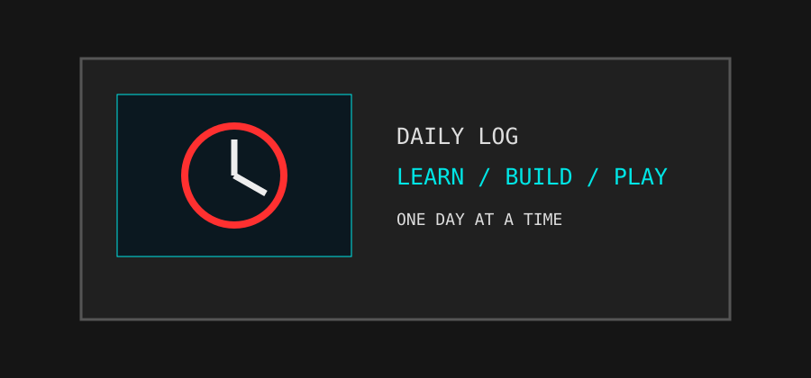

> DAILY_ACTIVITY.LOG
> OPENING DAILY JOURNAL...
> RECORD FOUND
Keseharian saya diisi dengan kuliah, mengerjakan tugas, belajar hal baru, mengembangkan project, dan beristirahat dengan bermain game atau menikmati hiburan.
> ROUTINE_LIST
> DISPLAYING ACTIVITY RECORDS
01 // STUDY
Mengikuti perkuliahan dan mengerjakan tugas.02 // PRACTICE
Mencoba coding dan mengembangkan kemampuan.03 // EXPLORE
Mencari referensi teknologi dan desain.04 // RELAX
Bermain game dan menikmati waktu luang.SYSTEM_PREVIEW.JPG
